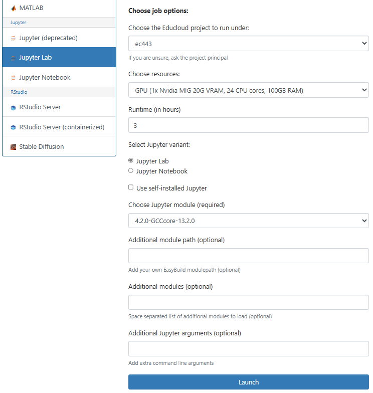
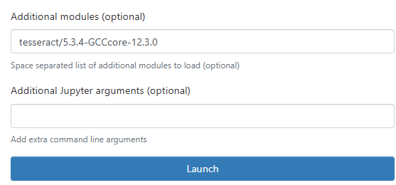

Getting Started#
We will run our programs through the service Educloud On Demand. (Educloud On Demand is a part of on the University of Oslo’s computing platform Educloud Research.) Educloud On Demand runs in your web browser, and doesn’t require installing any programs on your computer.
Getting Access#
Before you can log in, you must apply for membership in the Educloud project ec443. How you do that, depends on whether you have already registered an account on Educloud.
If you already have an Educloud account, you can apply for membership in the Educloud project ec443. Apply for membership in project ec443 by following this guide: Apply for access to an existing project in Educloud Research.
If you don’t already have an account on Educloud, for example through another project, you must create an account. Do step 1b, 2 and 3 in this guide: First time setup of Educloud Research. In step 1b you should apply for membership in project ec443.
Logging In#
Now, you can log in to Educloud On Demand with your Educloud username and password.
Note
Your username on Educloud is different from your regular UiO username. Educloud usernames always start with the three characters “ec-“. Educloud also has its own, separate two-factor identification (2FA) codes.
Starting JupyterLab#
After logging in, you should see the Educloud Dashboard. Click on JupyterLab on the dashboard. Here, you can configure your JupyterLab session.
In the field “Choose the Educloud project to run under:”, you should select ec443.
In the field “Choose resources:”, you should select “GPU (1x Nvidia MIG 20G VRAM, 24 CPU cores, 100GB RAM)”.
In the field “Runtime (in hours)” you should enter 3, for this course. In general, avoid reserving a GPU for longer than necessary, because GPUs are limited, shared resources.
In the field “Choose Jupyter module (required)” you should select “4.2.0-GCCcore-13.2.0”.
The other fields should be blank. Now, your setup should look like the picture below.

Start JupyterLab by clicking the blue “Launch” button at the bottom of the form. This creates a job that is sent to the job queue. When the necessary resources are available your job starts.
When the job has started, click the blue button “Connect to Jupyter” to open JupyterLab.
Optional OCR Support
Optionally, you can enable support for Optical Character Recognition (OCR).
OCR lets you convert images to text.
Load the module tesseract/5.3.4-GCCcore-12.3.0 by adding it to the field “Additional modules”.
You will also need to change the field “Choose Jupyter module (required)” to “4.0.5-GCCcore-12.3.0”, so that the versions match.

Exercises#
Exercise: Document folder
You will need a folder to store documents on Educloud. When you open JupyterLab, you get the File Browser in the left column. This is your home directory, where you can store your own files. If you don’t already have a folder called “documents”, create one. To create a new folder, click the gray “New Folder” button in the top menu. A new folder appears in the list, with a suggested name like “Untitled Folder”. Write “documents” instead of “Untitled Folder” and press the Enter key on your keyboard to save.
Exercise: Upload files to Fox
You can upload some documents that you want to work with on Fox. For now, you should avoid uploading documents that contain sensitive data. We recommend testing with public documents containing only green data.
Click on the “documents” folder that you created in your home directory in the previous exercise. Click on the blue “Upload” button in the top menu. Then, click on “browse files” and select a couple of files upload. Finally, click on the green “Upload x files” button in the bottom left corner.